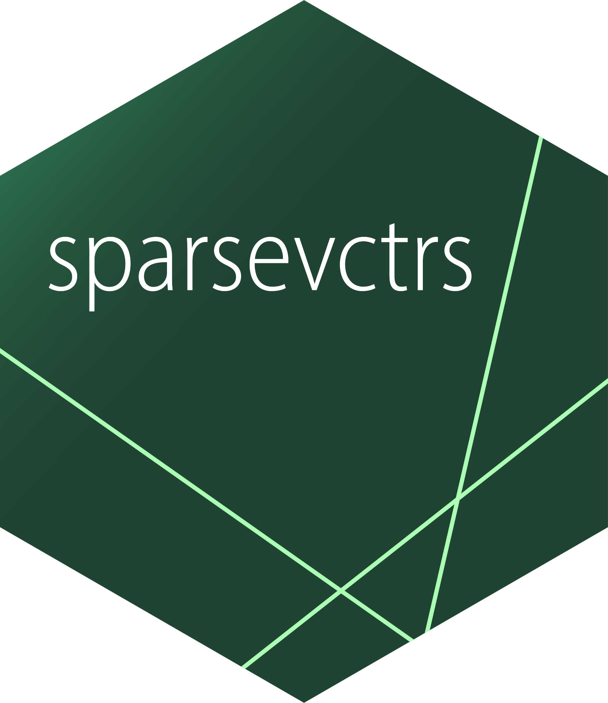

library(tidymodels)
library(nycflights13)
library(sparsevctrs)
flights$arr_time <- NULL
flights$time_hour <- NULL
flights <- flights[!is.na(flights$arr_delay), ]
rec <- recipe(arr_delay ~ ., data = flights) |>
step_impute_mean(all_numeric_predictors()) |>
step_unknown(all_nominal_predictors()) |>
step_dummy(all_nominal_predictors())
mod <- boost_tree() |>
set_engine("xgboost") |>
set_mode("regression")
wf_spec <- workflow(rec, mod)sparsity
support in
tidymodels
faster and less memory hungry models
Emil Hvitfeldt
useR! 2025

Motivated example
Fitting the workflow
Last year
runtime: 480 seconds
Memory allocated: 82 GB
Today
runtime: 100 4 seconds
Memory allocated: 822 MB
ALTREP

What is ALTREP?
Short for ALTerntive REPresentation
Some examples of intended uses would be to
- allow vector data to be in a memory-mapped file or distributed
- allow compact representation of arithmetic sequences
- support adding meta-data to objects
- support alternative representations of environments
Integer sequences
created using
n:m
seq()
seq_len()
seq_along()
length vs size
Integer sequences
1 2 3 4 5 6 7 8 9 10 11 12 13 14 15
length start step
Integer sequences
pseudo implementation for length() and sum()
altrep methods
altrep
- UnserializeEX
- Unserialize
- Serialized_state
- DuplicateEX
- Duplicate
- Coerce
- Inspect
- Length
altvec
- Dataptr
- Dataptr_or_null
- Extract_subset
integer
- Elt
- Get_region
- Is_sorted
- No_NA
- Sum
- Min
- Max
SPARSITY
sparse vector
0 0 0 0 0 2 0 0 0 0 0 4 0 0 0 0 0 0 0 0 0
length positions values
Sparse operations
Sparse operations in C
static int altrep_sparse_integer_Elt(SEXP x, R_xlen_t i) {
SEXP val = extract_val(x);
SEXP pos = extract_pos(x);
const int* v_pos = INTEGER_RO(pos);
const R_xlen_t size = Rf_xlength(pos);
const R_xlen_t len = extract_len(x);
const int v_default_val = extract_default_integer(x);
if (i > len) {
// OOB of vector itself
return NA_INTEGER;
}
const int needle = (int) i + 1;
const R_xlen_t loc = binary_search(needle, v_pos, size);
if (loc == size) {
// Can't find it, must be the default value
return v_default_val;
} else {
// Look it up in `val`
return INTEGER_ELT(val, loc);
}
}sparsevctrs
- All ALTREP happens in C
- Operations must match dense operations
- Very fragile, will materialize if not careful

sparsevctrs
- Contains converters between sparse matrices from {Matrix} and tibbles with sparse vectors
- Is a developer focused package
INTEGRATION

Why are we doing this?
Because sparse matrices from {Matrix} doesn’t work with tibbles
tidymodels is built on tibbles
Integration in tidymodels
Tibbles can contain sparse vectors inside all of tidymodels internals
recipe steps can produce sparsity
Automatic toggle

Integration in tidymodels
sparse tibbles in internals
Making it so sparse matrices are turned into sparse tibbles in all entry points
recipe(), prep(), bake(), fit(), predict(), and augment()
Adding a ton of testing with sparse matrices and sparse tibbles
Integration in tidymodels
recipe steps
Recipes steps that could produce sparse data now have sparse argument
It takes 3 values:
"yes": Generate sparse vectors"no": Don’t generate sparse vectors"auto": Automatically decide (default)
Integration in tidymodels
Automatic toggle
- Does model support sparse data?
- Is there high sparsity in the data?
If the answer to both questions are “yes” then tidymodels will do things sparsely
Integration in tidymodels
detecting high sparsity
The sparsity matters for the parsnip model
We need to estimate the sparsity that comes out of recipes
Each step have a method that returns how it is expected to change sparsity
Integration in tidymodels
detecting high sparsity
Simulation study using different sizes of data, different amounts of sparsity, for all supported models
Fit MARS model on the log(dense time / sparse time)
used orbital to embed this fitted model in the toggler
USER EXPERIENCE
New features
- sparse data input now have native support in tidymodels
- automatic toggle can be turned off or on manually by setting
sparse = "no"or"yes"in relevant steps
What to change
library(tidymodels)
library(nycflights13)
library(sparsevctrs)
flights$arr_time <- NULL
flights$time_hour <- NULL
flights <- flights[!is.na(flights$arr_delay), ]
rec <- recipe(arr_delay ~ ., data = flights) |>
step_impute_mean(all_numeric_predictors()) |>
step_unknown(all_nominal_predictors()) |>
step_dummy(all_nominal_predictors(), sparse = "auto")
mod <- boost_tree() |>
set_engine("xgboost") |>
set_mode("regression")
wf_spec <- workflow(rec, mod)Thank you!